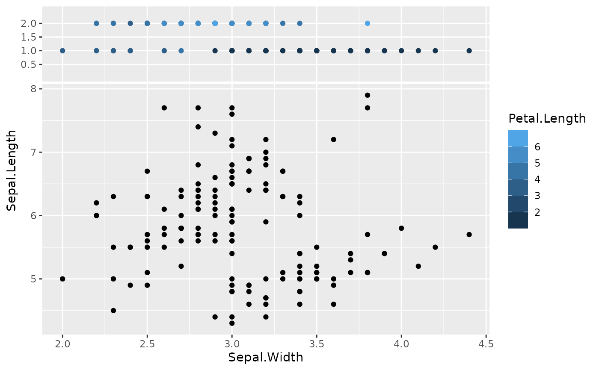

Position scales for binning continuous data ggside scales
Source:R/scales-sides-.R
ggside-scales-binned.RdThe xside and yside variants of scale_x_binned/scale_y_binned. scale_xsidey_binned enables better control on how the y-axis is rendered on the xside panel and scale_ysidex_binned enables better control on how the x-axis is rendered on the yside panel.
Usage
scale_xsidey_binned(
name = waiver(),
n.breaks = 10,
nice.breaks = TRUE,
breaks = waiver(),
labels = waiver(),
limits = NULL,
expand = waiver(),
oob = squish,
na.value = NA_real_,
right = TRUE,
show.limits = FALSE,
transform = "identity",
guide = waiver(),
position = "left"
)
scale_ysidex_binned(
name = waiver(),
n.breaks = 10,
nice.breaks = TRUE,
breaks = waiver(),
labels = waiver(),
limits = NULL,
expand = waiver(),
oob = squish,
na.value = NA_real_,
right = TRUE,
show.limits = FALSE,
transform = "identity",
guide = waiver(),
position = "bottom"
)Arguments
- name
The name of the scale. Used as the axis or legend title. If
waiver(), the default, the name of the scale is taken from the first mapping used for that aesthetic. IfNULL, the legend title will be omitted.- n.breaks
The number of break points to create if breaks are not given directly.
- nice.breaks
Logical. Should breaks be attempted placed at nice values instead of exactly evenly spaced between the limits. If
TRUE(default) the scale will ask the transformation object to create breaks, and this may result in a different number of breaks than requested. Ignored if breaks are given explicitly.- breaks
One of:
NULLfor no breakswaiver()for the default breaks computed by the transformation objectA numeric vector of positions
A function that takes the limits as input and returns breaks as output (e.g., a function returned by
scales::extended_breaks()). Note that for position scales, limits are provided after scale expansion. Also accepts rlang lambda function notation.
- labels
One of the options below. Please note that when
labelsis a vector, it is highly recommended to also set thebreaksargument as a vector to protect against unintended mismatches.NULLfor no labelswaiver()for the default labels computed by the transformation objectA character vector giving labels (must be same length as
breaks)An expression vector (must be the same length as breaks). See ?plotmath for details.
A function that takes the breaks as input and returns labels as output. Also accepts rlang lambda function notation.
- limits
One of:
NULLto use the default scale rangeA numeric vector of length two providing limits of the scale. Use
NAto refer to the existing minimum or maximumA function that accepts the existing (automatic) limits and returns new limits. Also accepts rlang lambda function notation. Note that setting limits on positional scales will remove data outside of the limits. If the purpose is to zoom, use the limit argument in the coordinate system (see
coord_cartesian()).
- expand
For position scales, a vector of range expansion constants used to add some padding around the data to ensure that they are placed some distance away from the axes. Use the convenience function
expansion()to generate the values for theexpandargument. The defaults are to expand the scale by 5% on each side for continuous variables, and by 0.6 units on each side for discrete variables.- oob
One of:
Function that handles limits outside of the scale limits (out of bounds). Also accepts rlang lambda function notation.
The default (
scales::squish()) squishes out of bounds values into range.scales::censor for replacing out of bounds values with
NA.scales::squish_infinite()for squishing infinite values into range.
- na.value
Missing values will be replaced with this value.
- right
Should the intervals be closed on the right (
TRUE, default) or should the intervals be closed on the left (FALSE)? 'Closed on the right' means that values at break positions are part of the lower bin (open on the left), whereas they are part of the upper bin when intervals are closed on the left (open on the right).- show.limits
should the limits of the scale appear as ticks
- transform
For continuous scales, the name of a transformation object or the object itself. Built-in transformations include "asn", "atanh", "boxcox", "date", "exp", "hms", "identity", "log", "log10", "log1p", "log2", "logit", "modulus", "probability", "probit", "pseudo_log", "reciprocal", "reverse", "sqrt" and "time".
A transformation object bundles together a transform, its inverse, and methods for generating breaks and labels. Transformation objects are defined in the scales package, and are called
transform_<name>. If transformations require arguments, you can call them from the scales package, e.g.scales::transform_boxcox(p = 2). You can create your own transformation withscales::new_transform().- guide
A function used to create a guide or its name. See
guides()for more information.- position
For position scales, The position of the axis.
leftorrightfor y axes,toporbottomfor x axes.
Examples
ggplot(iris, aes(Sepal.Width, Sepal.Length)) +
geom_point() +
geom_xsidepoint(aes(y = Petal.Width, xcolour = Petal.Length)) +
scale_xsidey_binned(n.breaks = 4) +
scale_colour_steps(aesthetics = "xcolour", guide = guide_colorbar(available_aes = "xcolour")) +
theme(ggside.panel.scale.x = .3)
